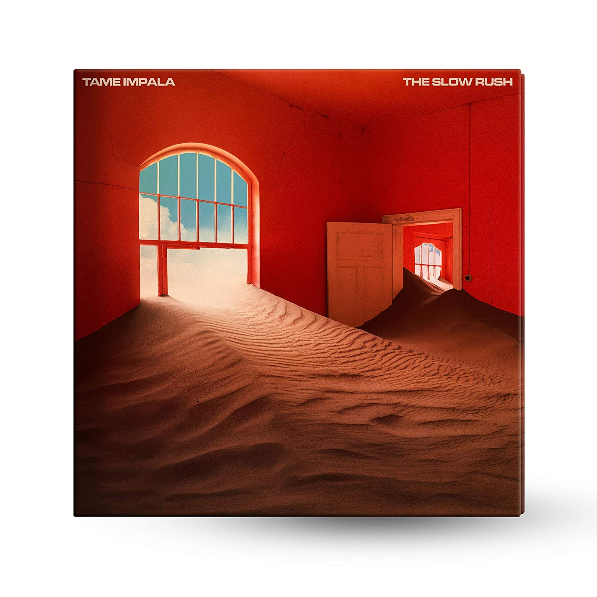

Tame Impala Discography

Innerspeaker 2010
1. "It Is Not Meant to Be" 5:22
2. "Desire Be Desire Go" 4:26
3. "Alter Ego" 4:48
4. "Lucidity" 4:30
5. "Why Won't You Make Up Your Mind?" 3:19
6. "Solitude Is Bliss" 3:55
7. "Jeremy's Storm" (instrumental) 5:28
8. "Expectation" 6:02
9. "The Bold Arrow of Time" 4:24
10. "Runway, Houses, City, Clouds" 7:15
11. "I Don't Really Mind"

Currents 2015
1. "Let It Happen" 7:46
2. "Nangs" 1:47
3. "The Moment" 4:15
4. "Yes I'm Changing" 4:30
5. "Eventually" 5:19
6. "Gossip" 0:55
7. "The Less I Know the Better" 3:38
8. "Past Life" 3:47
9. "Disciples" 1:48
10. "'Cause I'm a Man" 4:02
11. "Reality in Motion" 4:12
12. "Love/Paranoia" 3:10
13. "New Person, Same Old Mistakes"

The Slow Rush 2020
1. "One More Year" 5:22
2. "Instant Destiny" 3:13
3. "Borderline" 3:57
4. "Posthumous Forgiveness" 6:05
5. "Breathe Deeper" 6:13
6. "Tomorrow’s Dust" 5:25
7. "On Track" 5:00
8. "Lost in Yesterday" 4:09
9. "Is It True" 3:58
10. "It Might Be Time" 4:33
11. "Glimmer" 2:08
12. "One More Hour" 7:13